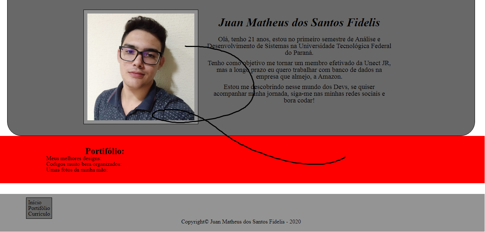
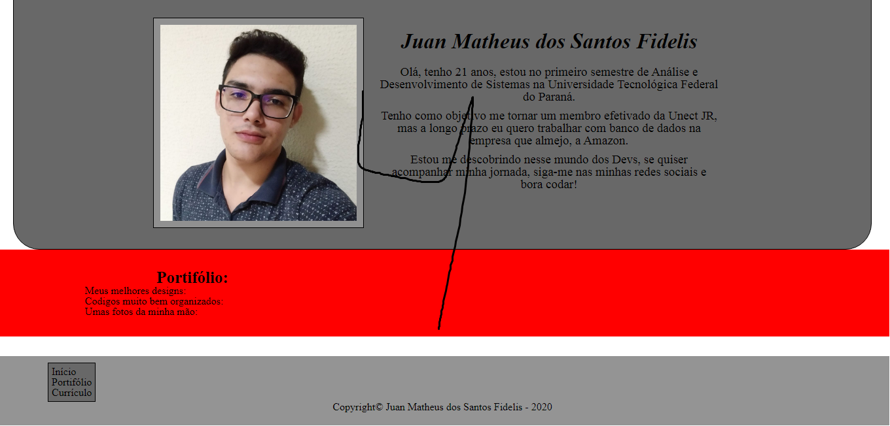
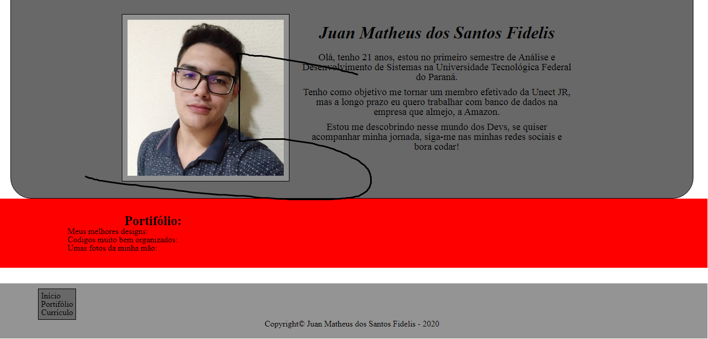
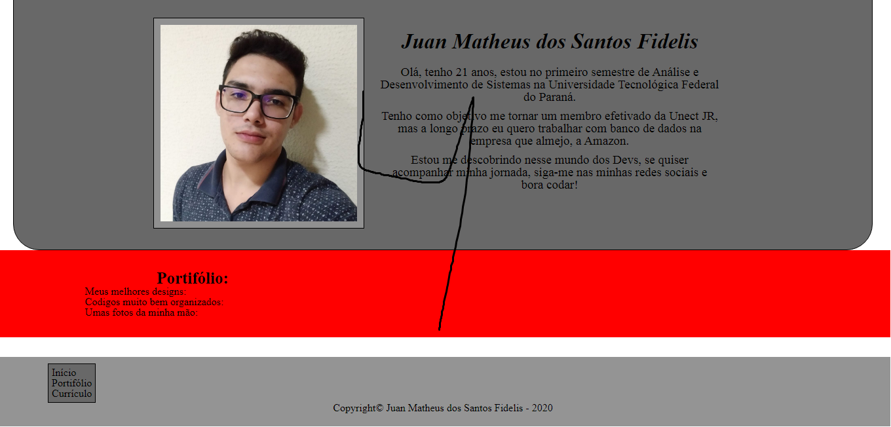
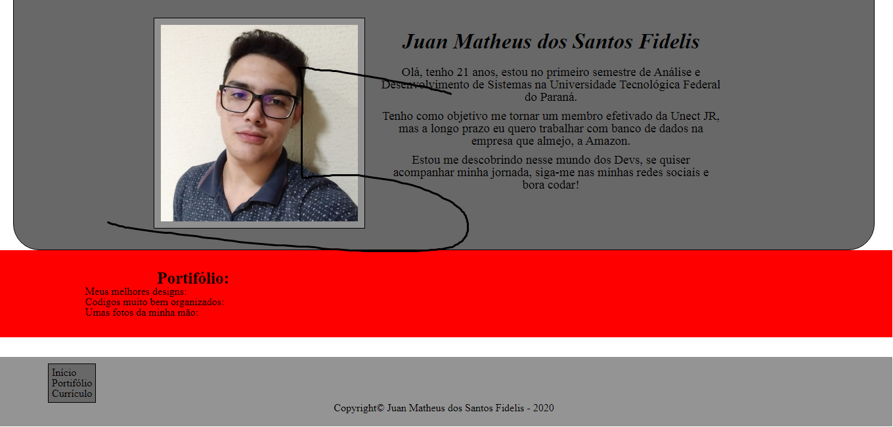
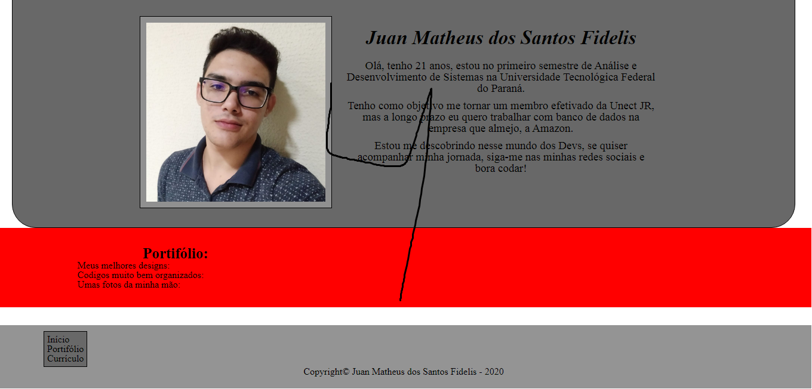
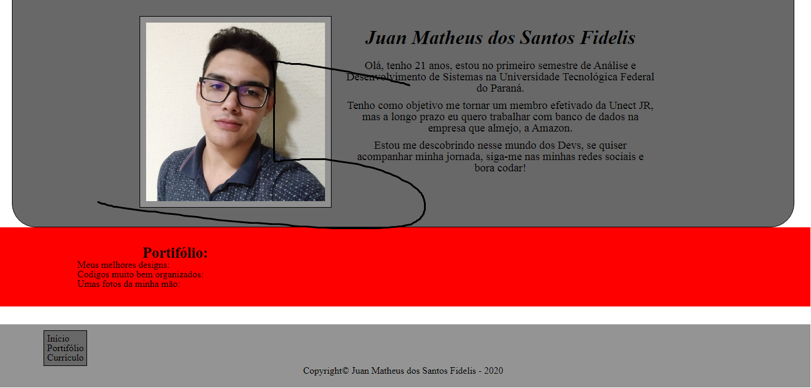
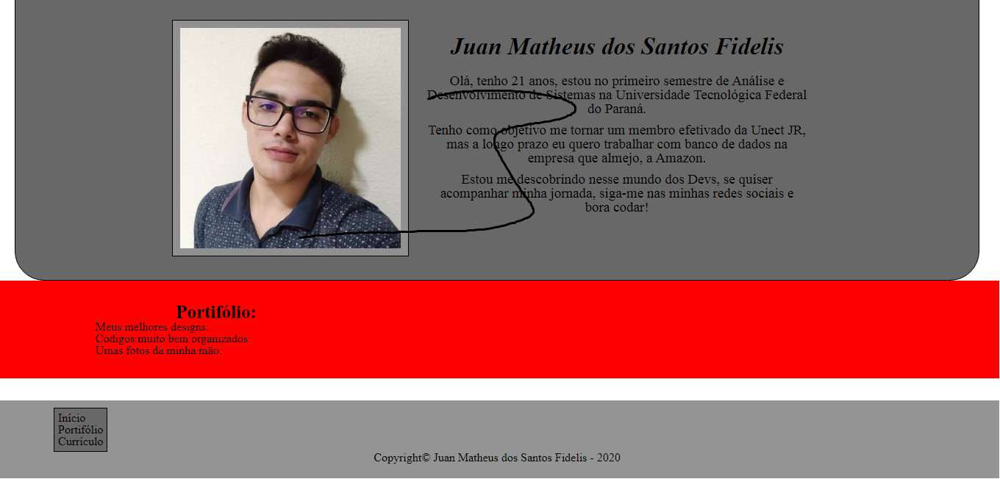
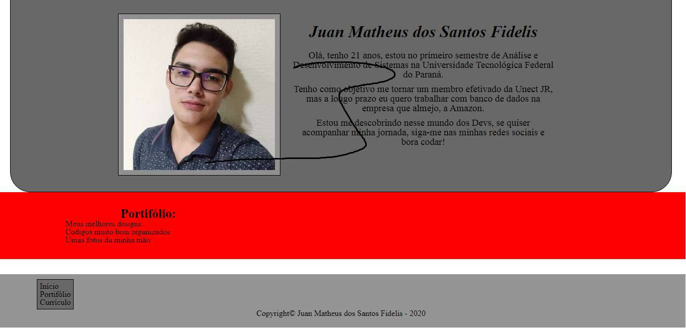

Juan Matheus dos Santos Fidelis
Olá, tenho 21 anos, estou no primeiro semestre de Análise e Desenvolvimento de Sistemas na Universidade Tecnológica Federal do Paraná.
Tenho como objetivo me tornar um membro efetivado da Unect JR, mas a longo prazo eu quero trabalhar com banco de dados na empresa que almejo, a Amazon.
Estou me descobrindo nesse mundo dos Devs, se quiser acompanhar minha jornada, siga-me nas minhas redes sociais e bora codar!
Portifólio
Meus melhores designs:

 





Codigos muito bem organizados:

 


Umas fotos da minha mão: